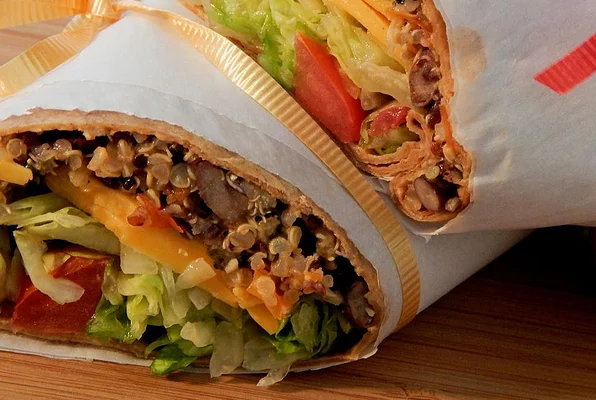

Southwest Roll-Ups

Description
Great as an appetizer or snack, these roll-ups are sure to get your taste buds tingling for more!
- 2 cups water
- 1 cup quinoa
- 1 (16 ounce) can black beans, rinsed and drained
- 1 red bell pepper, chopped
- ½ cup fresh spinach leaves
- 2 tablespoons barbeque sauce
- 1 tablespoon chopped garlic
- 1 pinch ground cumin, or more to taste
- 1 pinch cayenne pepper, or more to taste
- ¼ cup shredded Cheddar cheese
-
- 4 (10 inch) flour tortillas, warmed
-
Steps:
- Bring water and quinoa to a boil in a saucepan. Reduce heat to medium-low, cover, and simmer until quinoa is tender and water has been absorbed, 15 to 20 minutes.
- While quinoa cooks, mix black beans, red bell pepper, spinach, barbeque sauce, garlic, cumin, and cayenne pepper together in a saucepan over medium heat. Stir in Cheddar cheese and cook, stirring occasionally, until the cheese is completely melted, 5 to 10 minutes. Remove from heat and stir in cooked quinoa.
- Place tortillas on a flat work surface. Spoon filling in a line across the middle of each tortilla; fold in opposing edges to overlap the filling. Roll up as you would burritos.